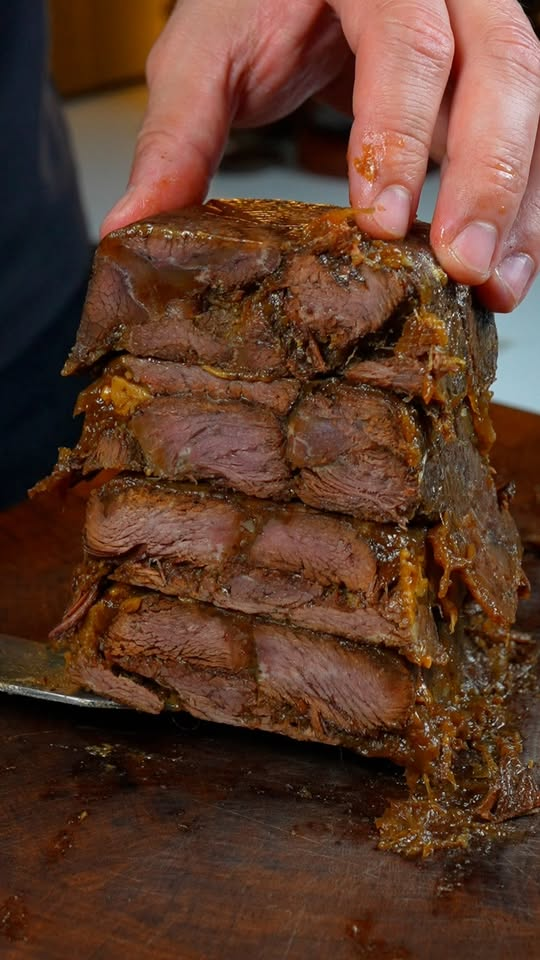

para
personas

Pasos
- Cortar paleron y joue de bœuf en trozos grandes e iguales.
- Marcar en cocotte con aceite de oliva hasta caramelizar por todos lados (que suelten los sucs).
- Agregar lardons de panceta ahumada; caramelizar en los jugos.
- Garniture: zanahoria, apio, ajo aplastado y cebolla en trozos. Va sobre los lardons (se forma un fond de braisage y la carne se apoya encima).
- Desglasar con vino tinto, agregar la carne y su jugo.
- Umami: un poco de jugo de bœuf reducido congelado + un toque de salsa de soja.
- Aromas: tomillo y laurel. Hervor, espumar y cocinar tapado 3 horas.
- Escurrir la carne, verificar que esté tierna, ponerla en un molde de cake con papel sulfurizado.
- Prensar y dejar toda la noche en la heladera (queda compacta).
- Al día siguiente: desmoldar, cortar porciones.
- Salsa: el jugo pasado por colador fino (chinois étamine), reducir a la mitad, montar con manteca; si se quiere más espesa, maïzena diluida.
- Servir: porciones a placa con papel sulfurizado, sal, pimienta, aceite de oliva, 210 °C por 8 minutos; napar con la salsa.
- "No pongas cuchillo en la mesa: se come con tenedor o cuchara."